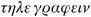

When M. and Mme de Villefort returned to their own apartments, they learned that the Count of Monte Cristo, who had come to pay them a visit, had been shown into the drawing-room and was waiting for them there. Mme de Villefort was too upset to go in directly but went first to her bedroom, while the crown prosecutor was more sure of himself and proceeded at once towards the drawing-room. But, however successful he was in controlling his feelings and not letting them show on his face, M. de Villefort was unable entirely to dispel the cloud from his brow, so the count, greeting him with a radiant smile, could not help noticing his sombre air of preoccupation.
‘Good Lord, Monsieur de Villefort!’ Monte Cristo said, after the first greetings had been exchanged. ‘What is wrong? Have I come at a moment when you were compiling rather too capital an indictment?’
Villefort tried to smile. ‘No, Count,’ he said. ‘I am the only victim here. I am losing my own case, and the indictment was drawn up as a result of chance, obstinacy and folly.’
‘How do you mean?’ Monte Cristo asked, with a perfect show of sympathetic curiosity. ‘Have you really suffered some serious misfortune?’
‘Oh, Monsieur le Comte,’ Villefort said, with icy bitterness, ‘it is not worth mentioning. It is nothing, simply a financial loss.’
‘Agreed,’ said Monte Cristo. ‘A financial loss is a trivial matter to someone who possesses a fortune and a philosophical outlook which are both as broad as yours.’
‘Yes,’ Villefort replied. ‘It is not the money that bothers me – though, when all’s said and done, nine hundred thousand francs may be worth a sigh, or at least a snort of irritation. But I am chiefly vexed by the turn of fate, of chance, of destiny… I don’t know what to call the force behind the blow that has just struck me, destroying my financial expectations and, perhaps, my daughter’s future, because of the whim of a senile old man.’
‘My goodness! What is this?’ the count exclaimed. ‘Did you say nine hundred thousand francs? Even a philosopher might regret the loss of such a sum. Who has brought this upon you?’
‘My father, whom I mentioned to you.’
‘Really? Monsieur Noirtier? But I thought you told me that he was totally paralysed and deprived of all his faculties?’
‘Yes, his physical faculties, for he cannot move or speak; yet, as you see, despite that, he thinks, wills and acts. I left him five minutes ago and at this moment he is dictating his last will to two notaries.’
‘So he must have spoken?’
‘He did better than that: he made himself understood.’
‘How?’
‘With a look: his eyes still live and, as you see, their look can kill.’
‘My friend,’ Mme de Villefort said, coming into the room, ‘perhaps you are exaggerating the situation?’
‘Madame…’ the count said with a bow. In return, Mme de Villefort gave him her most gracious smile.
‘What is Monsieur de Villefort telling me, then?’ Monte Cristo asked. ‘And what incomprehensible change of heart… ?’
‘Incomprehensible! That’s the word,’ the prosecutor repeated with a shrug of the shoulders. ‘An old man’s whim!’
‘And there is no way of making him change his mind?’
‘Yes, there is,’ said Mme de Villefort. ‘It is entirely within my husband’s power to ensure that the will, instead of being made to Valentine’s disadvantage, is in her favour.’
The count, seeing that the couple were starting to speak in parables, took on an absent-minded air, and began to give the most profound attention and the most marked approval to Edouard, who was pouring ink into the birds’ drinking dish.
‘Now, dearest,’ Villefort said, in answer to his wife, ‘you know that I do not enjoy playing the tyrant in my own home and that I have never thought the fate of the world hung on my nod. However, it is important that my decisions should be respected in my family, and that the folly of an old man and the whim of a child should not be allowed to upset a plan that has been settled in my mind for several years. The Baron d’Epinay was my friend, as you know, and a match with his son is entirely suitable.’
‘Do you think,’ Mme de Villefort asked, ‘that Valentine might be in league with him? Consider: she has always been opposed to this match and I should not be surprised if all we have just seen and heard were not the result of a plan agreed between the two of them.’
‘Believe me, Madame,’ said Villefort, ‘no one gives up a fortune of nine hundred thousand francs just like that.’
‘She would have given up the world, since a year ago she wanted to go into a convent.’
‘No matter,’ Villefort persisted. ‘I insist, Madame, that this marriage should take place.’
‘Despite your father’s wishes?’ Mme de Villefort said, changing to another tack. ‘That is serious.’
Monte Cristo pretended not to be listening, but he heard every word that was being said.
‘I have to tell you that I have always respected my father because, as well as natural filial feeling, I had an awareness of his moral superiority; and because a father is doubly sacred, both as our creator and as our master. But today I can no longer recognize any intelligence in an old man who is transferring on to the son what is nothing any more except a memory of hatred for the father. It would be ridiculous for me to subject my behaviour to his whims. I shall continue to have the greatest respect for Monsieur Noirtier. I shall accept the financial punishment that he is imposing on me without complaint. But I shall remain inflexible in my resolve and the world will recognize that common sense is on my side. Consequently, I shall marry my daughter to Baron Franz d’Epinay because, in my view, this marriage is good and honourable; and, when it comes down to it, because I wish to marry my daughter to whomsoever I please.’
‘What!’ said the count, to whom the prosecutor had constantly been looking for approbation. ‘What! Do I understand that Monsieur Noirtier is disinheriting Mademoiselle Valentine because she is going to marry Baron Franz d’Epinay?’
‘Yes, by heaven! Yes, yes, Monsieur: that’s the reason,’ Villefort said, shrugging his shoulders.
‘At least, as far as one can see,’ Mme de Villefort added.
‘The real reason, Madame. Believe me, I know my father.’
‘Can you imagine such a thing?’ the young woman replied. ‘I ask you, how can Monsieur Noirtier find Monsieur d’Epinay any less acceptable than anyone else?’
‘Indeed,’ said the count. ‘I have met Monsieur Franz d’Epinay, the son of General de Quesnel, I think, who was created Baron d’Epinay under King Charles X?’
‘Precisely,’ Villefort replied.
‘He seems to me to be a charming young man!’
‘So it must be an excuse, I am sure of it,’ said Mme de Villefort. ‘Old men are jealous of their affections. Monsieur Noirtier does not want his granddaughter to marry.’
‘But is there some cause for this hatred?’
‘Good Lord, who can tell?’
‘Perhaps some political antipathy?’
‘As it happens, my father and Monsieur d’Epinay’s did live through those stormy times, of which I only experienced the final days,’ said Villefort.
‘Wasn’t your father a Bonapartist?’ Monte Cristo asked. ‘I seem to remember you telling me something like that.’
‘My father was a Jacobin more than anything else,’ Villefort said, driven to abandon his usual caution. ‘The senator’s cloak that Napoleon threw over his shoulders only served to disguise the man, without changing him. When my father plotted, it was not for the emperor but against the Bourbons, because he had this fearsome quality of not struggling for some unattainable Utopia, but only for what was achievable; and, to attain that, he would apply the terrible doctrines of the Montagne,1 which would shrink from nothing.’
‘There you are, then,’ said Monte Cristo. ‘Monsieur Noirtier and Monsieur d’Epinay must have met in the political field. I believe that General d’Epinay, even though he served under Napoleon, remained a Royalist at heart. Is he not the same who was assassinated one evening on his way home from a Napoleonic club, which he had been persuaded to visit by some who thought he shared their opinions?’
Villefort looked at the count with something akin to terror.
‘Am I mistaken?’ Monte Cristo asked.
‘Not at all, Monsieur,’ said Mme de Villefort. ‘On the contrary, quite correct. And it is because of what you have just mentioned, and to extinguish this old animosity, that Monsieur de Villefort considered uniting in love two children whose fathers had been divided by hatred.’
‘What a sublime thought!’ said Monte Cristo. ‘A generous thought and one that the world should applaud. It would indeed be fine to see Mademoiselle Noirtier de Villefort become Madame Franz d’Epinay.’
Villefort shuddered and looked at Monte Cristo as if trying to read the deeper impulse that had inspired these words. But the count’s face wore only the same benevolent smile fixed on it and, try as he might, the crown prosecutor could not see what lay beyond that.
‘So,’ Villefort resumed, ‘although it is a great misfortune for Valentine to lose her grandfather’s legacy, I do not see this as any reason to annul the marriage. I do not think Monsieur d’Epinay will be discouraged by this financial setback. He may realize that I am worth more than the money, since I am prepared to sacrifice it to keep my word. In any case, he will realize that Valentine has her mother’s wealth, which is administered by Monsieur and Madame de Saint-Méran, her maternal grandparents, both of whom love her dearly.’
‘And who deserve to be loved and cared for as much as Valentine has done for Monsieur Noirtier,’ said Mme de Villefort. ‘As it happens, they will be coming to Paris in a month, or less, and after such an affront she will be relieved of any obligation to stay constantly with Monsieur Noirtier, as she did before.’
The count listened indulgently to the discordant cries of all these wounded vanities and damaged interests. Then, after a moment’s silence, he said: ‘It seems to me… And I beg you in advance to forgive me for what I am about to say… but it seems to me that while Monsieur Noirtier may be disinheriting Mademoiselle de Villefort because she is marrying a man whose father he hated, he cannot find the same fault with your dear Edouard.’
‘Absolutely, Monsieur!’ Mme de Villefort exclaimed, in a voice that defies description. ‘Is it not unjust, horribly unjust? Poor Edouard is as much Monsieur Noirtier’s grandchild as Valentine, yet if Valentine had not been engaged to Franz, Monsieur Noirtier would have left everything to her. What is more, Edouard bears the family name, but that does not alter the fact that, even supposing her grandfather really does disinherit her, she will still be three times as rich as he will.’
Having turned the knife in this wound, the count listened in silence.
‘Come, Count,’ said Villefort, ‘come, I pray you, let us say no more about these family troubles. Yes, my fortune will go to enrich the poor: it is they who truly have the wealth nowadays. Yes, my father has denied me my legitimate expectations, and for no good reason. But I shall have acted like a man of sense and a man of heart. I promised Monsieur d’Epinay the income from that money and he shall have it, however much I may have to put up with…’
‘However,’ said Mme de Villefort, returning to the one idea constantly hovering at the back of her mind, ‘perhaps it might be better to confide all this in Monsieur d’Epinay, who can release us from the engagement.’
‘Oh, that would be a disaster!’ Villefort exclaimed.
‘A disaster?’ Monte Cristo repeated.
‘Of course,’ Villefort said, in softer tones. ‘A broken engagement, even when money is the cause, reflects very badly on a young woman. And then the old rumours, which I have tried to suppress, would become more plausible. But it won’t happen. Monsieur d’Epinay, if he is a gentleman, will feel himself more firmly engaged than before by Valentine’s loss of prospects, or else he would seem to be acting out of pure avarice. No, it’s impossible.’
‘I agree with Monsieur de Villefort,’ said Monte Cristo, looking intently at Mme de Villefort. ‘And if I were a close enough friend to venture to offer some advice, I would suggest that he reinforces the engagement to the point where it cannot be undone, since Monsieur d’Epinay, as I understand, is about to return to Paris. In short, I should arrange for this marriage, which will do such honour to Monsieur de Villefort, to take place.’
Villefort got up, visibly overwhelmed with delight, while the colour drained from his wife’s cheeks.
‘Very well,’ he said, offering Monte Cristo his hand. ‘That is all I was asking for; I shall take advantage of your excellent advice. So, let everyone consider that what has happened here today is irrelevant. Nothing in our plans has changed.’
‘Monsieur,’ the count said, ‘unjust though people are, they will thank you for your resolve, I promise you. Your friends will be proud of you. As for Monsieur d’Epinay, even if he were obliged to accept Mademoiselle de Villefort without any dowry at all – which cannot be the case – he would be delighted to join a family whose members can rise to such a sacrifice to keep their word and do their duty.’ With this, he got up and prepared to depart.
‘Are you leaving us, Monsieur le Comte?’ asked Mme de Villefort.
‘Madame, I must. I came only to remind you of your promise for Saturday.’
‘Were you afraid that we might forget?’
‘You are too kind, Madame. But Monsieur de Villefort has such grave and sometimes such pressing obligations…’
‘My husband has given his word, Monsieur,’ said Mme de Villefort. ‘You have just seen that he will keep it even when he has everything to lose; so how much more when he has everything to gain… ?’
‘Are we to meet at your house in the Champs-Elysées?’ Villefort asked.
‘No,’ said Monte Cristo. ‘This is what makes your compliance all the more praiseworthy: in the country.’
‘In the country?’
‘Yes.’
‘But where? Near Paris, I hope?’
‘Just outside, half an hour from the gates, in Auteuil.’
‘In Auteuil!’ Villefort exclaimed. ‘Of course, I’d forgotten. Madame told me that you lived in Auteuil because she was taken into your house. Where in Auteuil?’
‘In the Rue de la Fontaine.’
‘The Rue de la Fontaine!’ Villefort repeated, in a strangled voice. ‘What number?’
‘Number twenty-eight.’
‘So you have bought Monsieur de Saint-Méran’s house?’ Villefort cried.
‘Monsieur de Saint-Méran?’ said the count. ‘Did that house belong to Monsieur de Saint-Méran?’
‘Yes,’ Mme de Villefort said. ‘And can you believe this…’
‘What.’
‘You found it a pretty house, I imagine, Monsieur le Comte?’
‘Delightful.’
‘Well, my husband has never wanted to live there.’
‘Oh! I must say, Monsieur, that I cannot imagine what your objection can be.’
‘I do not like Auteuil, Monsieur,’ the prosecutor replied, making an effort to control his feelings.
‘I hope that this dislike will not deprive me of the pleasure of receiving you?’ Monte Cristo asked anxiously.
‘No, Count… I hope… I shall do all in my power… believe me,’ Villefort stammered.
‘Oh, I can accept no excuses,’ said Monte Cristo. ‘I shall be expecting you on Saturday at six o’clock. If you don’t come, I shall start to imagine that there must be – how shall I say? – some dark superstition or some blood-stained tale connected with a house that has been uninhabited for more than twenty years.’
‘I shall be there, Monsieur le Comte, I shall be there,’ Villefort said, hurriedly.
‘Thank you,’ said Monte Cristo. ‘And you must please permit me to take my leave.’
‘Now, now, you did tell us that you have to leave us, Monsieur le Comte,’ said Mme de Villefort. ‘And I think you were even going to tell us why, when your train of thought was interrupted.’
‘In truth, Madame,’ said Monte Cristo, ‘I am not sure that I dare tell you where I am going.’
‘Come, come! Tell us!’
‘I am an idle fellow, I confess, but I am going to visit a thing that has often made me stop and stare for hours.’
‘And what is that?’
‘A telegraph.2 There you are: I’ve said it.’
‘A telegraph!’ Mme de Villefort repeated.
‘Yes, indeed, the very thing: a telegraph. Often, at the end of a road, on a hilltop, in the sunshine, I have seen those folding black arms extended like the legs of some giant beetle, and I promise you, never have I contemplated them without emotion, thinking that those bizarre signals so accurately travelling through the air, carrying the unknown wishes of a man sitting behind one table to another man sitting at the far end of the line behind another table, three hundred leagues away, were written against the greyness of the clouds or the blue of the sky by the sole will of that all-powerful master. Then I have thought of genies, sylphs, gnomes and other occult forces, and laughed. Never did I wish to go over and examine these great insects with their white bellies and slender black legs, because I was afraid that under their stone wings I would find the human genie, cramped, pedantic, stuffed with arcane science and sorcery. Then, one fine morning, I discovered that the motor that drives every telegraph is a poor devil of a clerk who earns twelve hundred francs a year and – instead of watching the sky like an astronomer, or the water like a fisherman, or the landscape like an idler – spends the whole day staring at the insect with the white belly and black legs that corresponds to his own and is sited some four or five leagues away. At this, I became curious to study this living chrysalis from close up and to watch the dumbshow that it offers from the bottom of its shell to that other chrysalis, by pulling bits of string one after the other.’
‘So that is where you are going?’
‘It is.’
‘To which telegraph? The one belonging to the Ministry of the Interior, or the observatory?’
‘No, certainly not. There I should find people who would try to force me to understand things of which I would prefer to remain ignorant, and insist on trying to explain a mystery that is beyond their grasp. Come! I want to keep my illusions about insects; it is enough to have lost those I had about human beings. So I shall not go either to the telegraph at the Ministry of the Interior, or to the one at the observatory. What I need is a telegraph in the open countryside, so I can see the fellow fixed in his tower and in his pure state.’
‘You are an odd sort of aristocrat,’ said Villefort.
‘What line do you advise me to examine?’
‘Whichever is busiest at the moment.’
‘Well, then! The Spanish one?’
‘Exactly. Would you like a letter from the minister asking them to explain…’
‘No, not at all,’ said Monte Cristo. ‘On the contrary, as I have just told you, I do not wish to understand any of it. As soon as I understood it, there would be no more telegraph, there would just be a signal from Monsieur Duchâtel or Monsieur de Montalivet, en route for the prefect in Bayonne and disguised in two Greek words: .3 What I wish to preserve, in all its purity and my veneration, is the creature with the black legs and fearful words.’
‘You must go then, because it will be dark in two hours and you will see nothing.’
‘No! Now I am worried. Where is the nearest?’
‘On the Bayonne road, I think.’
‘Then let it be the Bayonne road.’
‘That would be the one at Châtillon.’
‘And after that?’
‘The one at the Tour de Montlhéry, I think.’
‘Thank you. Farewell! I shall tell you on Saturday what I think of it.’
At the door, the count met the two notaries who had just disinherited Valentine and were leaving, delighted at having completed a piece of business that was bound to do them credit.